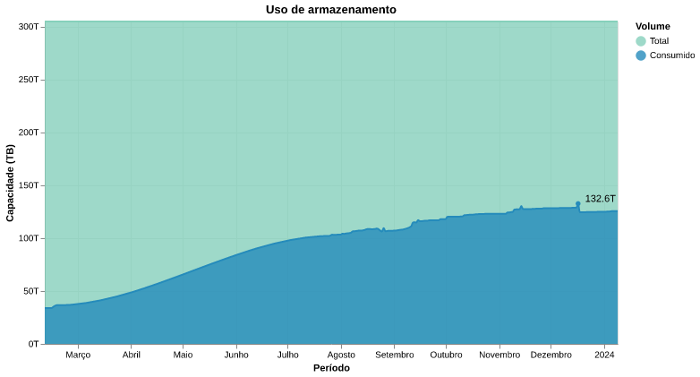
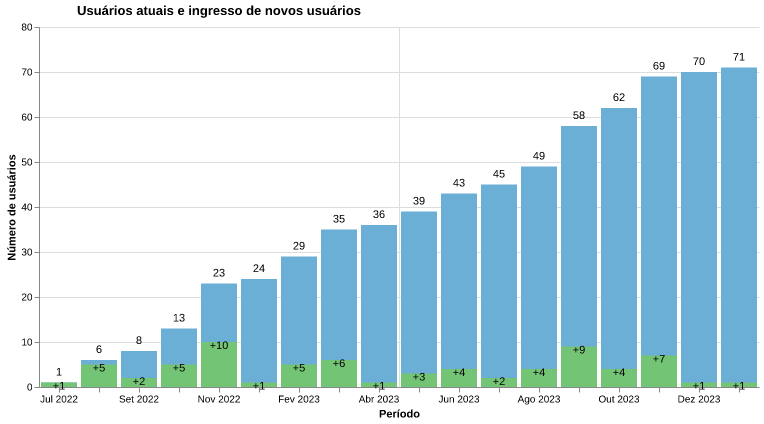
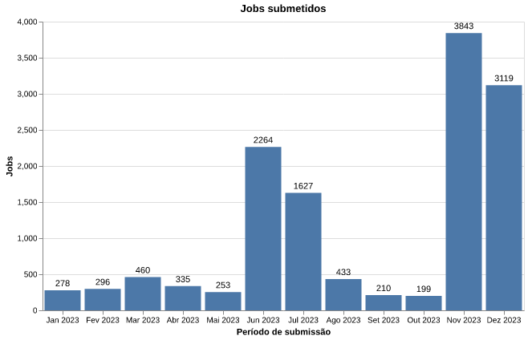
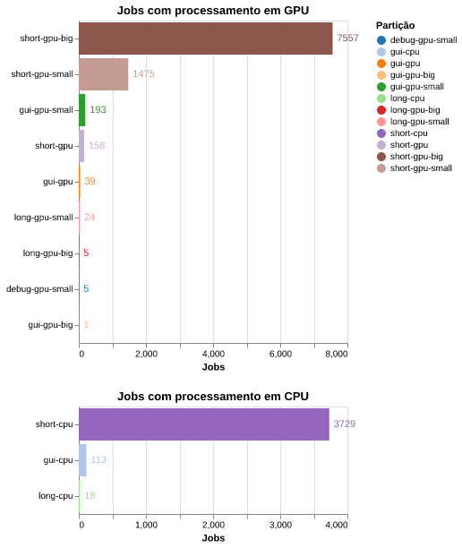
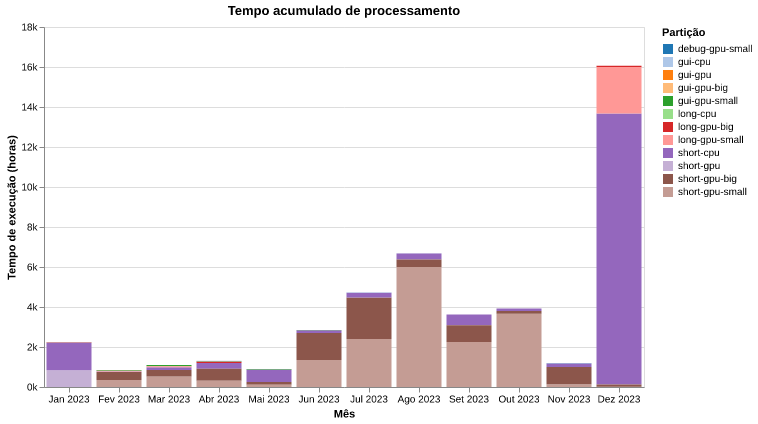
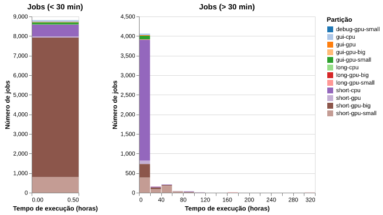
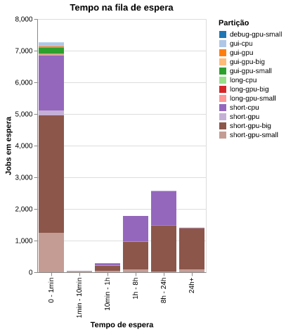
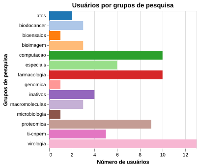
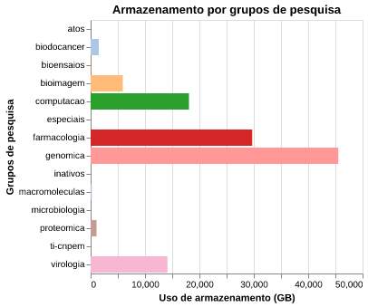
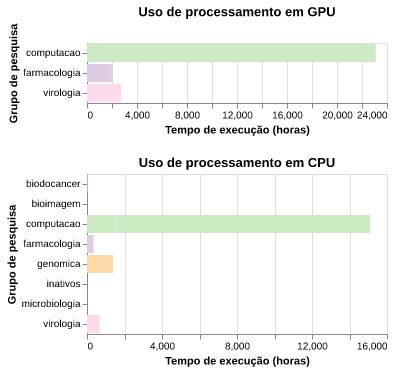

Relatório de uso do Marvin (HPC-LNBio)
Período: 2023
Índice
1. Introdução
Este relatório tem como objetivo fornecer uma visão do uso do cluster de alta performance Marvin (HPC-LNBio) em 2023. O relatório cobre o uso do armazenamento de dados na storage, o crescimento do número de usuários, o uso dos recursos de processamento de dados e o uso estratificado para cada grupo.
2. Uso do armazenamento de dados
O armazenamento de dados cresceu de modo significativo no HPC-LNBio, partindo de ~40TB em fevereiro de 2023 para 132TB em dezembro de 2023 (Figura 1). Isso corresponde a um crescimento de aproximadamente 9TB por mês.
A previsão atual, considerando que a taxa de crescimento seja linear, é que a capacidade máxima da storage será atingida em 18 meses (junho de 2025) e a capacidade de 80% - limite considerando uma margem de segurança - será atingida em dezembro de 2024.

Figura 1: Gráfico do armazenamento de dados no HPC
3. Número de usuários
O número de usuários ativos indica a utilização pelos grupos de pesquisa do LNBio.
O Marvin iniciou o ano de 2023 com 24 usuários ativos e em dezembro de 2023, há 70 usuários ativos (Figura 2). Observando a figura 2, notamos uma taxa de crescimento aparentemente linear, com média de 5 usuários novos/mês.

Figura 2: Número de usuários ativos e ingresso de novos usuários.
4. Uso do processamento
4.1. Número de jobs
O processamento computacional em HPCs como o Marvin é realizado através da submissão de jobs. Nesses jobs, o usuário descreve os recursos computacionais que ele deseja utilizar - a quantidade de CPUs, GPUs e memória RAM - e os scripts e programas que serão executados. Assim, ao observarmos o número de jobs submetidos (Figura 3), podemos estimar como os usuários tem utilizado os recursos computacionais disponíveis.
Observando a figura 3 é possível notar que a demanda por jobs não foi uniforme ao longo do ano, mas apresentou picos em alguns meses.

Figura 3: Número de jobs submetidos por mês no período analisado.
Os jobs exibidos na figura 3 são submetidos para diferentes partições do SLURM. Os que utilizam processamento em GPU são submetidos para as partições ∗-gpu-∗ e os que utilizam apenas processamento em CPU para as partições ∗-cpu-∗. Os jobs submetidos para as partições gui-∗-∗ são sessões gráficas (VNC, Jupyter ou RStudio) inicializadas através do OpenOnDemand.
Na figura 4 observamos essa distribuição de jobs por diferentes partições. A maior demanda foi para a partição (fila) short-gpu-big a qual possui uma placa NVIDIA A100 40GB. A segunda partição com maior demanda foi a short-cpu e a terceira maior demanda foi para a partição short-gpu-small a qual fornece uma gpu NVIDIA de 5GB. As partições gui-∗-∗ executaram, em conjunto, 346 jobs iniciados vias OpenOnDemand. A classe de partições long-∗-∗ e /debug-∗ foram as menos utilizadas.

Figura 4: Número de jobs por servidor (GPU ou CPU) e em cada partição.
4.2. Tempo de execução dos jobs
Na figura 5 podemos observar o tempo acumulado de processamento de cada uma das partições. Esse tempo corresponde a soma do tempo de execução dos jobs. Juntamente com os dados acima, isso nos permite ter uma visão da utilização do HPC e das partições mais utilizadas.

Figura 5: Tempo acumulado de execução de jobs por partição.
Na figura 6 podemos observar a distribuição do tempo de execução dos jobs.
Observamos que a maior parte dos jobs tiveram duração inferior a 30 minutos.
A duração média dos jobs com tempo de execução maior que 30 minutos foi de aproximadamente 9.6 horas e a mediana foi de 4.6 horas. Apenas 10% desses jobs duraram mais que 20 horas.

Figura 6: Distribuição do tempo de execução dos jobs.
4.3. Tempo de jobs na fila de espera
Quando um usuário submete um job para ser processado em uma partição do SLURM, o job entra na fila de execução. Caso outros jobs estejam sendo executados e consumindo os recursos disponíveis, como CPUs, GPUs e memória, o job permanece na fila aguardando que outros jobs sejam concluídos e, consequentemente, que os recursos necessários para sua execução sejam liberados.
Por isso, o tempo que os jobs permanecem na fila de espera indicam a competição dos usuários por recursos e nos dão uma ideia de quão suficiente são os recursos atuais para atender a demanda.
No ano de 2023, ~54% dos jobs permaneceram por um período inferior a 1 minuto. No outro extremo, aproximadamente ~10% dos jobs ficaram aguardando na fila por mais de 24 horas. Do restante, ~13% ficaram na fila de 1 a 8 horas e ~19% ficaram na fila entre 8 e 24 horas (Figura 7).

Figura 7: Tempo de espera dos jobs até o início da execução.
5. Informação por grupos de pesquisa do LNBio
A figura 8 mostra o número de usuários do Marvin por grupos de pesquisa do LNBio e outros como, usuários de teste, de suporte - TI/CNPEM e ATOS - e usuários inativos como ex-alunos e ex-colaboradores.
report.fig_users_per_group(user_group)

Figura 8: Número de usuários por grupo de pesquisa. São considerados usuários inativos aqueles que não estão mais no CNPEM.
A figura 9 mostra o volume de dados armazenados pelos usuários de acordo com o grupo de pesquisa que integram 1.
O grupo com maior volume de dados armazenado é o de Genômica e Metabolômica (genomica), seguido dos grupos de Farmacologia Molecular (farmacologia), Biologia Computacional - Computação Científica (computacao), Virologia, Bioimagem, Biologia do Câncer e Proteômica (Figura 9).

Figura 9: Uso de armazenamento por grupo de pesquisa.
A figura 10 mostra o tempo acumulado de execução dos jobs para cada grupo de pesquisa. É possível notar que devido a diversidade dos softwares utilizados e das análises feitas pelos grupos há uma grande diferença entre o processamento em GPU e CPU.
O grupo que apresentou maior utilização de tempo de processamento foi a Biologia Computacional - Computação Científica, seguido da Virologia, Farmacologia Molecular e, Genômica e Metabolômica, este último, com todo o processamento nas partições de CPU.

Figura 10: Tempo de execução de jobs por grupo de pesquisa.
6. Discussão
6.1. Armazenamento
A taxa de crescimento do armazenamento de dados na storage está dentro das previsões feitas pelo grupo de Computação Científica com base nas entrevistas realizadas com os grupos de pesquisa em 2022 para o "Projeto EXA". No planejamento para 2024, enfatizamos a necessidade de uma expansão da storage através da adição de um servidor com capacidade aproximada para 1PB (PetaByte), o que também era previsto.
Futuramente, acreditamos que a taxa de armazenamento tenderá a aumentar devido a aquisição e modernização de equipamentos experimentais e ao crescimento da demanda pelos grupos do LNBio. Um exemplo próximo é a implantação do software OMERO que possibilitará o armazenamento de imagens de HTS e de microscopia, a maior parte dessas armazenadas atualmente no servidor do Columbus.
6.2. Usuários
O número de usuários tem crescido organicamente, independente de ações de treinamento, devido as necessidades dos grupos de pesquisa.
6.3. Processamento
Dentre os dados coletados de processamento, o que mais atraiu nossa atenção foi a grande variação observada para o tempo de espera na fila entre os dados anteriores - Jan a Ago de 2023 - e os dados anuais de 2023. Nas estatísticas coletadas de janeiro até agosto de 2023, 95% dos jobs submetidos esperavam menos de 1mim. Atualmente essa porcentagem caiu para 54% e 10% dos jobs esperaram mais que 24 horas na fila.
Outros pontos que chamaram nossa atenção foram que a partição de maior demanda foi a short-gpu-big e que as filas long e debug tem sido subutilizadas. Essas observações, juntamente com os dados que indicam que apenas 10% dos jobs tem duração maior que 20 horas, sugere que podemos fazer alguns ajustes a fim de otimizar o uso.
Dentre as ajustes que iremos analisar nas próximas semanas estão:
- Alteração dos recursos de GPU de 5 "big" (40GB) e 21 "small" (5GB) para, respectivamente, 6 e 14 2.
- Alteração do tempo máximo de execução nas filas dos atuais 5 dias para a "short" e 15 dias para a "long" para, respectivamente, 1 dia e 3 dias.
7. Conclusão
O relatório de uso anual de 2023 forneceu informações importantes para a administração do HPC/LNBio, que serão úteis para atender melhor as necessidades dos grupos de pesquisa. Acreditamos que os próximos relatórios poderão ser emitidos com maior frequência, semestralmente ou trimestralmente. Além da utilidade operacional, esperamos que tais relatórios contribuam para o planejamento e tomada de decisões no LNBio.